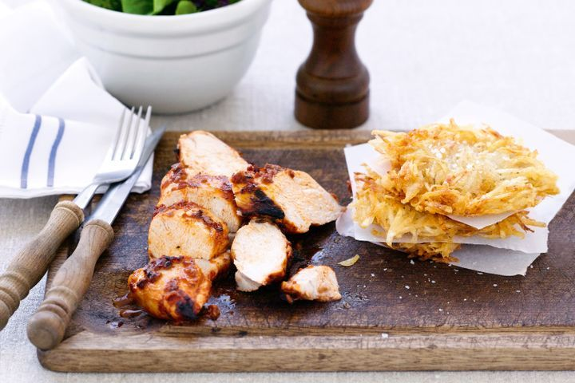

Excess Food
Quick Recipe
Chicken with Potato Cakes

Ingredients
- 135g btl Always Fresh Fusions Red Pepper or Tomato Tapenade
- 4 chicken breast fillets
- 1kg Golden Delight potatoes, washed, peeled, coarsely grated (see note)
- Olive oil, for shallow-frying
- 100g mixed salad leaves
Methods
- Place the tapenade in a bowl. Add the chicken and turn to coat.
- Place the potato in a large bowl. Season with salt and pepper. Add enough oil to a frying pan to come 5mm up the side. Heat over medium heat. Add four 1/3-cup portions of potato and flatten slightly. Cook for 2-3 minutes each side or until crisp and golden. Transfer to a plate lined with paper towel. Repeat, in 2 more batches, with the remaining mixture.
- Meanwhile, preheat grill on high. Cook chicken for 3-4 minutes each side or until cooked. Thickly slice.